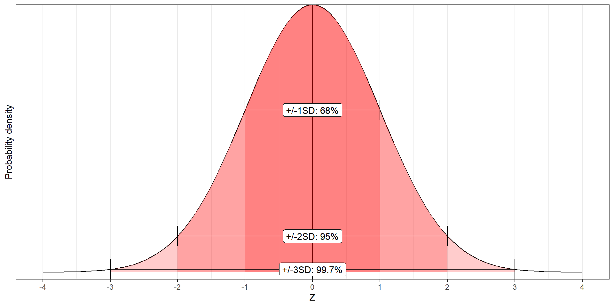
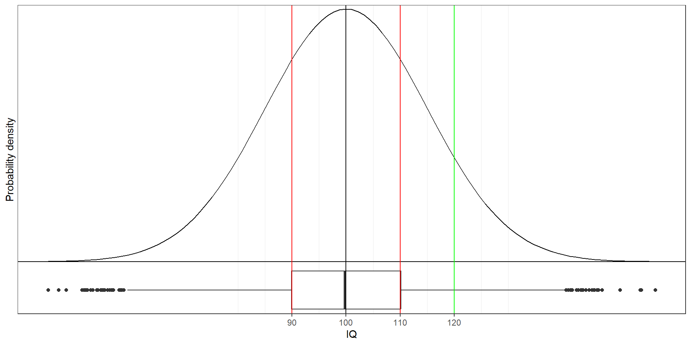
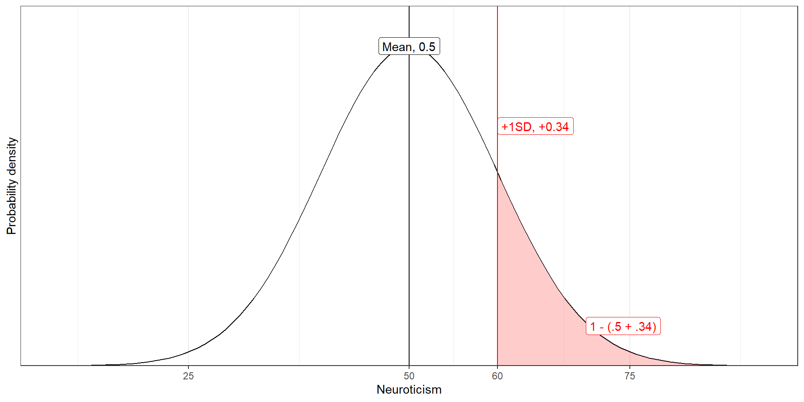
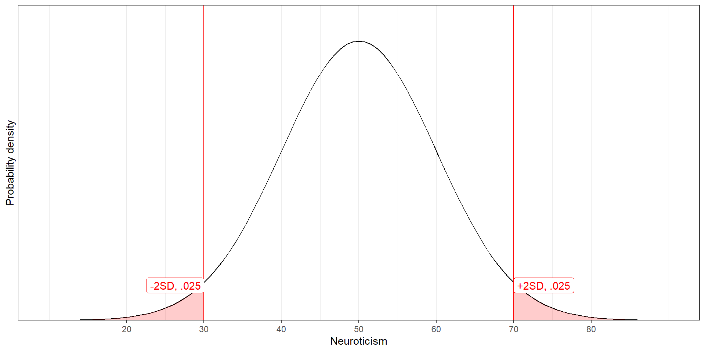

Discrete probability distributions

Frequency vs probability
Frequency distributions
- Summarize observed outcomes in a sample
- E.g., the number of Dutch/foreign students in this class
A probability distribution is similar, but
- Can be interpreted as the (estimated) probability of observing these outcomes in the future
- E.g., if I select a random student in this class, what’s the probability that they will be Dutch?
Discrete distributions
- Probability mass function
- 100% of the probability mass is distributed among finite discrete outcomes
- Finite number of outcomes
- Dutch student / foreign student
- Student has tattoos / no tattoos
- Describe using contingency table or bar chart
|
Tattoo
|
Total |
| No |
Yes |
| Dutch |
|
|
|
| No |
16 |
5 |
21 |
| Yes |
24 |
29 |
53 |
| Total |
40 |
34 |
74 |
Indexing contingency tables
\(i\): row
\(j\): column
\(f\): frequency (number of observations)
\(f_{i,j}\): frequency in the cell in row \(i\), column \(j\)
| \(i = 1\) |
\(f_{1,1}\) |
\(f_{1,2}\) |
\(f_{1,+}\) |
| \(i = 2\) |
\(f_{2,1}\) |
\(f_{2,2}\) |
\(f_{2,+}\) |
| Margin columns |
\(f_{+,1}\) |
\(f_{+,2}\) |
\(f_{+,+}\) |
Marginal frequency distribution
Separate frequency distribution of each variable in contingency table
| \(i = 1\) |
\(f_{1,1}\) |
\(f_{1,2}\) |
\(f_{1,+}\) |
| \(i = 2\) |
\(f_{2,1}\) |
\(f_{2,2}\) |
\(f_{2,+}\) |
| Margin columns |
\(f_{+,1}\) |
\(f_{+,2}\) |
\(f_{+,+}\) |
Marginal frequency distribution
For the variable “Tattoo”: How many people do / don’t have one? \(P(Tattoo)\)
For the variable “Dutch”: How many students are Dutch / International? \(P(Dutch)\)
| Dutch |
No |
Yes |
Total row |
| No |
16 |
5 |
21 |
| Yes |
24 |
29 |
53 |
| Total column |
40 |
34 |
74 |
Conditional frequency distribution
Frequency distribution of one variable, for specific value of the other variable
E.g.: What is the conditional frequency distribution of Tattoos for Dutch students? \(P(Tattoo | Dutch)\)
| Dutch |
No |
Yes |
Total row |
| No |
16 |
5 |
21 |
| Yes |
24 |
29 |
53 |
| Total column |
40 |
34 |
74 |
Joint frequency distribution
Frequency of a combination of two (or more) variables
E.g.: What is the frequency of Dutch students with a tattoo? \(P(Dutch \cap Tattoo)\)
| Dutch |
No |
Yes |
Total row |
| No |
16 |
5 |
21 |
| Yes |
24 |
29 |
53 |
| Total column |
40 |
34 |
74 |
Frequencies to probabilities
Divide frequencies by a total to get a probability distribution
Which frequencies and which total you use depends on what probability distribution you want
Marginal probability distribution
Divide marginal totals by the global total
E.g.: What is the marginal probability distribution of having a tattoo? \(P(Tattoo)\)
| Dutch |
No |
Yes |
Total row |
| No |
16 |
5 |
21 / 74 = 0.28 |
| Yes |
24 |
29 |
53 / 74 = 0.72 |
| Total column |
40 |
34 |
74 |
Conditional probability distribution
Divide the row- or column frequencies by the marginal total
E.g.: What is the conditional probability of having a tattoo for international students?
| Dutch |
No |
Yes |
Total row |
| No |
16 |
5 |
21 |
| Yes |
24 / 53 = 0.45 |
29 / 53 = 0.55 |
53 |
| Total column |
40 |
34 |
74 |
Joint probability distribution
Divide the cell frequency by the global total
E.g.: What is the joint probability of someone being Dutch and having a tattoo? \(P(Dutch \cap Tattoo)\)
| Dutch |
No |
Yes |
Total row |
| No |
16 |
5 |
21 |
| Yes |
24 / 74 = 0.32 |
29 |
53 |
| Total column |
40 |
34 |
74 |
Continuous probability distributions

Continuous probability distributions
- Infinite possible outcomes
- No exact probability for specific values
- Continuous probability density function describes how likely each outcome is
- Cf. probability mass function for discrete outcomes
- Surface area determines probability
- Many probability distributions exist
- This course covers only one…
Normal Distribution
Theoretical distribution for continuous variables
Bell-shaped, symmetric, from -infinity to +infinity
You can use it to describe (=model) real data
Two parameters:
- Mean \(\mu\) (“mu”): Most common / average value
- Standard deviation \(\sigma\) (“sigma”): Average deviation from the mean

Examples of Normal Distributions

| 1 |
–1.0 |
0.5 |
| 2 |
0.5 |
0.5 |
| 3 |
0.5 |
1.5 |
| 4 |
2.0 |
1.0 |
Standard Normal Distribution (Z-distribution)
\(Z \sim N(\mu = 0, \sigma^2 = 1)\) (so also \(\sigma = 1\))
- We can standardize any normal distribution to the Z-distribution
- This removes the units of measurement of our original variable
- Standardizing allows us to calculate probabilities more easily
- Stats books contain probability values for the Z-distribution
- We can always convert back to the original units
Standard Normal Distribution
\(Z \sim N(\mu = 0, \sigma = 1)\)

X to Z and vice versa
You can standardize values of any normally distributed variable
\(Z = \frac{X-\mu_x}{\sigma_x}\)
Standardizing: Removing the original units of measurement
And reverse it to get the units back; for any Z-value:
\(X = \mu_x + (Z*\sigma_x)\)
Properties of normal distribution
- The distribution is symmetric

\(P(Z < -1.64) = P(Z > 1.64) = 0.05\)
Properties 2
- Total surface area is 1
- We can find areas by taking the complement (1-something)
\(P(Z < 1.64) = .95\)

So \(P(Z > 1.64) = 1-.95 = .05\)
Properties 3
\(P(Z > 0) = .5\)
\(P(-.5< Z < 0) = .19\)
So \(P(Z > -.5) = .5+.19 = .69\)
Properties 4
Standard percentages for mean, +/- 1, 2, 3 SD
- 50% of distribution is below \(\mu\), 50% above

Percentiles
The \(k\)-th percentile is the score below which \(k\) percent of scores fall
So in the standard normal distribution:
- The mean/median is the 50th percentile, because \(P(Z < 0) = .5\)
- We call the 25th and 75th percentile the first and third quartile
- +1SD is the 84th percentile, because \(P(Z < 1) = .84\)
Percentiles for X-scores
Let’s apply this to \(IQ \sim N(\mu = 100, \sigma = 15)\)
- What percentile corresponds to IQ < 120?
- \(Z = \frac{120-100}{15} = 1.33\)
- \(P(Z<1.33) \approx .90\), so 90th percentile

Exercises
Neuroticism is distributed \(N(\mu = 50, \sigma = 10)\)
What is the probability that a randomly chosen person has a neuroticism score of 60 or higher?
Complete the sentence: “95% of the population scores between … and … on neuroticism.
Solutions
What is the probability that a randomly chosen person has a neuroticism score of 60 or higher?

Solutions
Complete the sentence: “95% of the population scores between … and … on neuroticism.

Calculate Z-values and p-values
- Draw the problem
- Check if the solution is (close to) a standard value like +/-SD
- If not, calculate Z-score
- Find p-value
- In Z-table
- Using an online calculator, e.g. https://onecompiler.com/r:
pnorm(zscore, mean, sd, lower.tail = TRUE)
- Using Excel formula:
=NORM.DIST(zscore, mean, sd, TRUE)
More difficult example
Example: Assume height is distributed
\(\text{Height}\sim N(\mu = 180, \sigma = 20)\)
- What percentage of the population is taller than 212cm?
Step 1: Draw the problem
Step 2: Standard solution? Not really

Calculate p-value
Step 3: Calculate Z-score
- \(Z = \frac{212 - 180}{20} = 1.6\)
Step 4: Find p-value
- To the right of 1.6
- Excel:
=1-NORM.DIST(1.6, 0, 1, TRUE)
- R:
pnorm(1.6, 0, 1, lower.tail = FALSE)
- Table (next slide)
Z-table

Conclusion: 5.48% of the population is taller than 212cm.